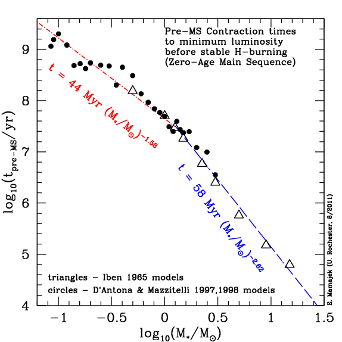

Date
& Time: 03/24/12
Location:
From home
Computing
context: Macho Mac
Software/Scripts
created today:
Useful
computer stuff figured out recently:
From
last time: if you want to add a constant
numerical value to the names of all the (numbered) files in a
directory, enter the following command at the unix prompt, when
you're within that directory:
ls
*_model.txt | awk -F'[_]' '{old=$0; n=$1+100; sub($1,n,$0); print
"mv " old " "$0}'|sh
ls
*_model_info.txt | sort -r | awk -F'[_]' '{old=$0; n=$1+100;
sub($1,n,$0); print "mv " old " "$0}' | sh
If
you want a simulation to 'pick up' where the results of a previous
one left off, make sure to set MODA = -1 in the .start file
It
looks like thecode.f can't handle NRIT values above 1000. Either
that, or it can't figure out how to do mod-arithmatic on NMOD values
above 9999. So, you can't really run the code for 10000 timesteps
and have it write output every 1000 steps. For now, my best work
around is to let the code go for 9500 time steps, and have it write
out model data every 500 steps.
Figured
out how to get the legend on my python-generated figures to have
multiple columns (and thereby fit on the visible portion of the
graph):
legend(prop={'size':8},loc='lower
center', ncol=3, fancybox=True, shadow=True)
Updated
both MyPythonGUIPlottingScript.py and plot_HR_evolution.py to
include this nicer, more legible version of the legend.
To
set a pop-up notification on my desktop that lets me know when one
of these really long thecode.f runs is finished (running in the
background), start the run like this:
Continuing
from last time:
Redo
my 0.3Msun with and without fusion HR/evolution long-time runs with
this spiffy new output parsing stuff.
Which
runs do I need to entirely re-run, and which do I still have the
output from and can just re-parse?
To
Do:
Run
the 0.3Msun with and without fusion cases forward in time for 1000
(fixed dT at 10^11 seconds apiece) + 9000 (letting thecode determine
the best dT values on the fly.
Make
sure to start both types from the converged one-step-with-fusion
model.
Make
sure to set MODA = -1 for that in the .start file...
Proceedure
for this:
Start
with ./polytr < polytr03.inp
./thecode
< pmsstar03.start > temp.txt
(pmsstar03StartWithFusion.mod)l
parse
pmsstar03StartWithFusion.txt (--> into
/debugging_results/0.3Msun_withfusionstart)
./thecode
< pmsstar03NoFusion > tempNoFusionFirst1000
(pmsstar03NoFusionFirst1000.mod)
Parse
iv and v (debugging results filenames = ?)
Use
pythonParser.py to parse each.
(0.3Msun_NoFusion/0.3MsunNoFusionFirst1000,
0.3Msun_WithFusion/0.3MsunWithFusionFirst1000)
Plot
iv and v results on HR diagram, and internal structure
Use
MyPythonGUIplotting.py to plot each.
Do
vii while starting the following runs
./thecode
< pmsstar03WithFusion > Next9000WithFusion
(pmsstar03WithFusionNext9000.mod)
./thecode
< pmsstar03NoFusion > Next9000NoFusion
(pmsstar03NoFusionNext9000.mod)
Parse
the results of A and B above using pythonParser.py
The
'with fusion' results -->
/0.3Msun_WithFusion/0.3MsunWithFusionNext9000
Arg!
A managed to *delete* my internal structure models from the
Next9000 part of this run!!!
...did
this while attempting to batch re-name the model_info.txt files
in that folder, using the awk command in the 'useful computer
stuff I've recently figured out' in the section above.
Figured
out why: lower numbered models were replacing higher numbered
models in the renaming process. Updated the awk command to
avoid doing this in the future. The key is to reverse the
order in which the renaming command hits the files in the
directory, hence the addition of the 'sort -r' to the command.
However,
I've already started a run going forward for an additional 10000
timesteps for the with-fusion case, since the simulation didn't
progress as far forward in time as the no-fusion case did during
this second phase of the evolution run.
The
HR info for the Next9000 part of the with-fusion run is still
there, though, as is the AboutThisRun file.
The
'no fusion' results -->
/0.3Msun_NoFusion/0.3MsunNoFusionNext9000
Plot
the (cumulative) results of both

Figure
1: Evolution of the NO FUSION 0.3Msun system. It stays within
the Hayashi track as it shrinks, which is good! It would be
interesting to see whether it ends up in the white dwarf area of
the HR diagram if I let it evolve even farther forward in time.

Figure
2: Evolution of the WITH FUSION 0.3Msun system. It stays
within the Hayashi track, but never hits the main sequence.
Make
sure both cases stay within the Hayashi limit, and don't do anything
else physically un-possible.
See
Figure 2 above. I don't know why it's never landing on the main
sequence, but regardless of why it's bad news.
I'm
going to run an out-of-the-box 1.0Msun model forward for many
timesteps, and plot its progress on the HR diagram to see if it
behaves correctly.
If
it doesn't, then I'm probably doing something wrong in calculating
the surface luminosities of these models.
If
it does, that means something inexplicable and probably difficult
to debug is happening within thecode.f itself when it starts
dealing with low-mass contracting objects.
If
steps 1-4 above produce physically possible and meaningful results,
repeat the no-fusion process for the 0.2Msun case.
Also
repeat the fusion vs. no-fusion check on a 1.0 Msun system.
Also
do the no-fusion process for a 0.1Msun case.
Figure
out how long it takes a pre-main sequence object to reach the main
sequence. (Should the 0.3Msun
with-fusion stars *really* be taking so incredibly long to hit the
main sequence?)
Answer:
no, not really.
From
http://www.pas.rochester.edu/~emamajek/coolplots.html:
"
Pre-MS
contraction time versus stellar mass: How long does it take a
pre-main sequence star to contract and reach the main sequence? It
takes a 1 solar mass star roughly 44 million years to contract to
the point at which hydrogen fusion accounts for nearly all of the
energy production (i.e. reaches the "zero-age main
sequence"). Plot was contructed using the D'Antona
& Mazzitelli evolutionary tracks and results from Iben
1965. Stars below ~1 Msun spend most of their pre-MS epoch
with mostly (or even fully) convective energy transport, whereas
the more massive stars evolve to the main sequence having mostly
radiative energy transport. (image last updated 8/2/2011)"
Based
on the relation posited in Figure 3 below:
|
Mass
( in Msun)
|
Pre-MS
contraction time (in seconds)
|
|
1
|
1.386
* 10^15
|
|
0.5
|
4.14
* 10^15
|
|
0.4
|
5.89
* 10^15
|
|
0.3
|
9.28777
* 10^15
|
|
0.2
|
1.76
* 10^16
|
|
0.1
|
5.27
* 10^16
|
|
0.05
|
1.57
* 10^17
|
|
0.01
|
2.00
* 10^18
|
|
10^-3
(~
Jupiter mass)
|
7.61
* 10^19
|

Figure
3: PMS contraction time as a function of mass.
Add
in mass-chaindown capabilities to thecode.
Compare
the behavior of a 0.2 or 0.1Msun model obtained through mass
chain-down to the models obtained in step(s) 5 and/or 7.
Figures:
{kind=link}